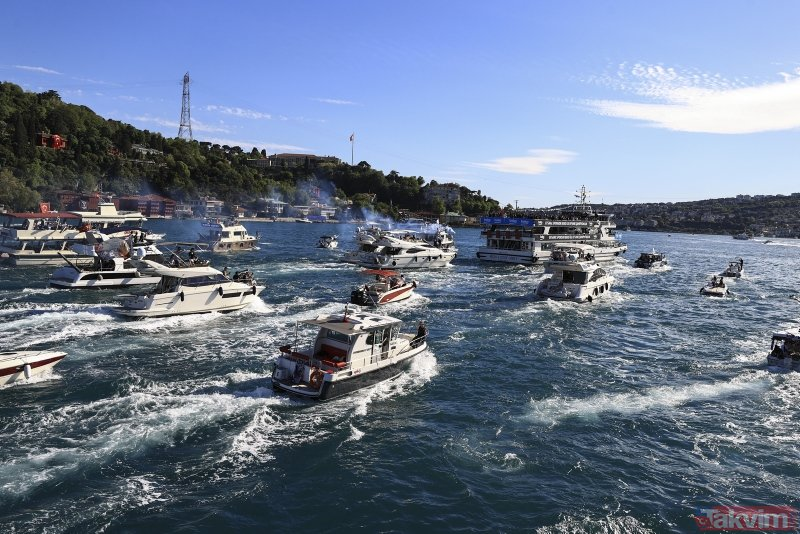
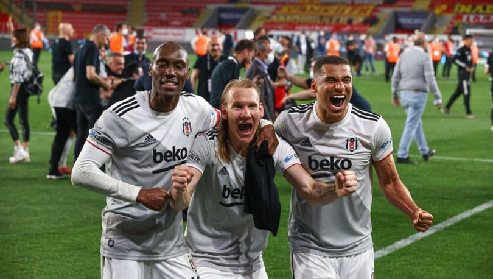

SPOR
Beşiktaş donanması İstanbul Boğazı'nda!
Süper Lig'in 2020-2021 sezonunda şampiyonluğunu ilan eden Beşiktaş'ta şampiyonluk kutlamaları başladı.Süper Lig'de Göztepe'yi deplasmanda 2-1 yenerek şampiyonluğa ulaşan ve Ziraat Türkiye Kupası'nı da İzmir'de Fraport TAV Antalyaspor ile oynadığı maçın ardından alan siyah-beyazlı ekip, BJK Nevzat Demir Tesisleri'nde bir araya geldi.
Siyah-beyazlı taraftarlar da takımlarının Dolmabahçe'ye gelişi öncesinde Beşiktaş'ta bir araya geldi. Taraftarlar, tezahüratlarla şampiyonluk sevincini sürdürdü. Emniyet güçleri BJK Nevzat Demir Tesisleri'nde ve Vodafone Park çevresinde geniş güvenlik önlemleri aldı.
ŞAMPİYON BEŞİKTAŞ.. KARA KARTAL DENİZDE
Spor Toto Süper Lig'i şampiyon olarak tamamlayan Beşiktaş, İstanbul Boğazı'dan özel bir tekneyle Vodafone Park'a hareket etti. Siyah-beyazlılara 100'ün üzerinde içerisinde Beşiktaş taraftarlarının olduğu tekne eşlik etti. İşte kutlamalarda öne çıkan o görüntüler ve futbolcuların sevinçleri...